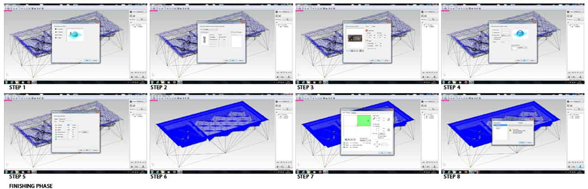

Week 9
Molding and Casting
TEXTURE
Assignment: Design a 3D mold, machine it, and cast parts from it.
- For this exercise, I decided to design a texture inspired by Escher.
DESIGN
- To design the 3D object I used Rhino.
3D MODEL:

Rhino: Export your model as Stl. Be sure that is on and under the 0.0.0 origin point of the axes
MATERIALS:
- Machinable Wax.
Software: Fab Modules
TOOLS:
- 1/8" end mill = 3.175 mm
- 1/32" end mill = 0.79375
- Mask
- Glasses
- Screwdriver
- Gloves
- Vacuum cleaner
MILLING:
- Monofab SRM-20
ROUGHING:
- For Roughing i used the 1/8" end mill = 3.175 mm

STEPS: Open Fab Modules on terminal: sudo fab, choose MonofabSRM20.stl, select your 3D STL file, select your molding step: Roughing (1/8"), Click Make Path, set your 0,0 point at the top-bottom-left corner, click on make rml, send the job to MonoFab SRM20.
FINISHING:
For Finishing 1/32" i used the end mill = 1.5875 mm .Because of the details of my model i needed the tool to be the smallest possible for more precision

For the finishing we have to change the tool to 1/32". Repeat the same process as roughing process but remember to change the diameter of the tool manualy,Material-Machinable Wax.
STEPS: Open Fab Modules (terminal> sudo fab), choose MonofabSRM20.stl, select the STL file, select your tool (for Roughing or Finishing), make Path, set the 0,0 point, make rml, send the job, begin Milling.
RELEASE:
Apply the release agent to assist the removal of the silicone.
DOSE:
Calibrate the container and does the right quantities of the two components.
Silicone Part-A, white color, and Silicon Part-B, red color. Parts A & B are mixed 100A:3B by weight. Pot life is 40 minutes and cure time is 24 hours.

MIX:
Mix thoroughly until the material is not homogeneous.
During the pouring of the silicone into the mold, proceed very gently.
We must ensure, to distribute silicone everywhere, trying not to create air bubbles.
P.s.: It is very important, especially if you have lots of details on your mold, to degass the silicone prior to using making the mold. The degassing removes air bubbles when the silicone is still liquid. If you do not degass, the air bubbles will cause imperfections in the mold and will then show up in the part.
Pot life is 40 minutes and cure time is 24 hours.
For food uses the mold must go into the oven for 2 hours at 80 and 1 hour to 100
CHOCOLATE MOLD:
After 24 hours
To make sweet chocolate we get help from a homemade pastry of Frosinone "Dolce Mascolo," that they were delighted to help, and their chocolate was delicious.
The next step I want to do is try out the mold with marble powder recycled, the topic of my project "Marble Eco Design".
I'll let you know.